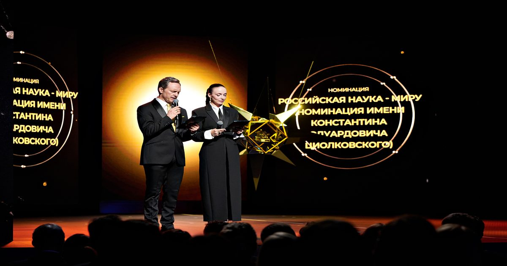

Объявлен шорт-лист премии «За верность науке»: полный список финалистов
Стали известны финалисты XII Всероссийской премии «За верность науке».
Среди претендентов — научные журналисты, университетские пресс-службы, авторы научно-популярных проектов и разработчики технологий на основе искусственного интеллекта.
Победителей объявят 30 октября в Москве.